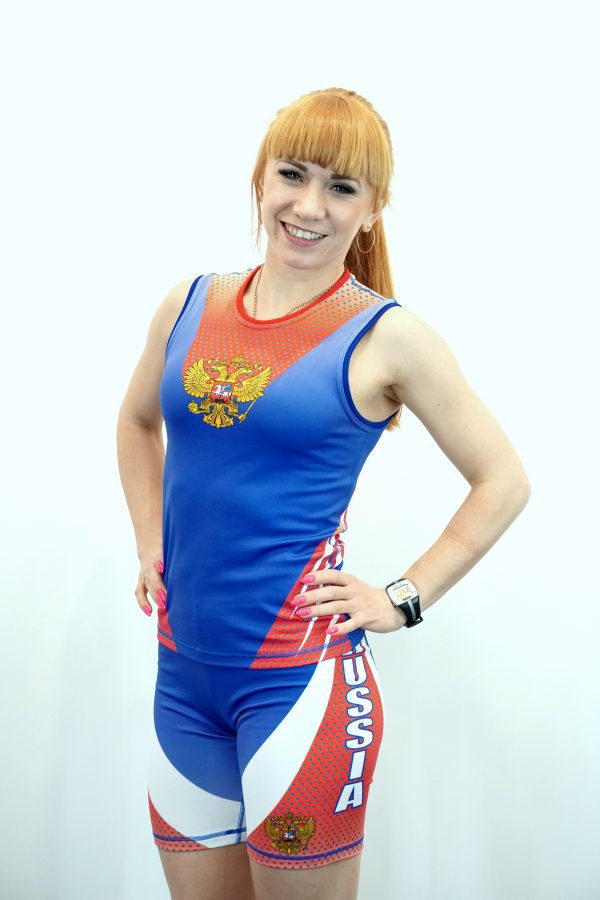
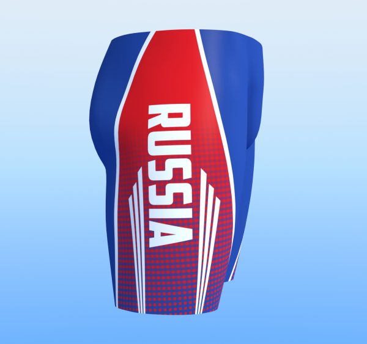
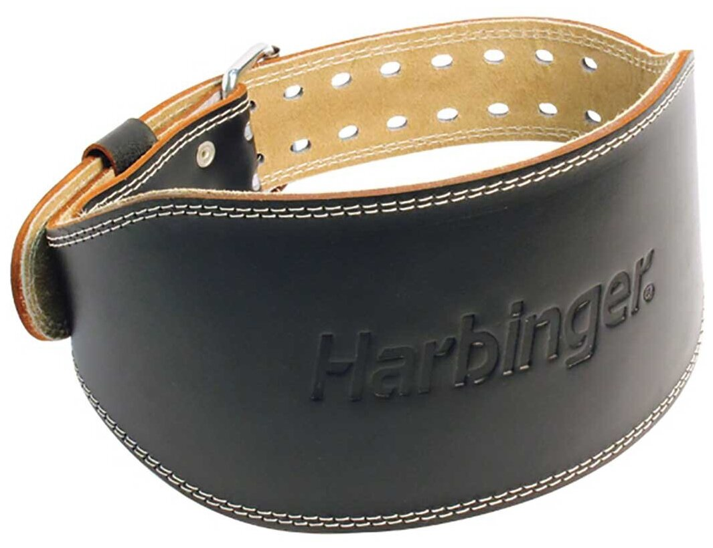
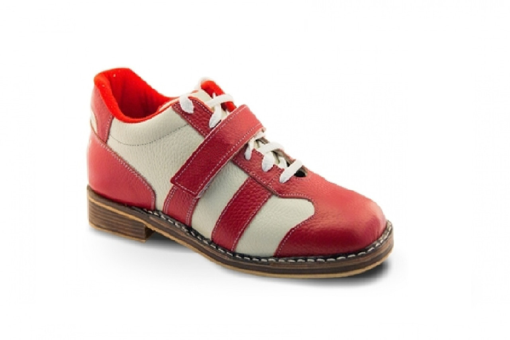

Обязательно должна быть из хлопковой ткани, для того, чтобы в упражнениях толчок и длинный цикл вся сила мышц ног
переходила в гири, а не рассеивалась при скольжении локтей по футболке. Именно такая ткань помогает зафиксировать
локти
в правильном положении, отлично впитывает пот и очень приятна к телу.
Почему именно футболка, а не майка? Рукава также играют свою немаловажную роль. При
сбросе гирь, рукава дают возможность
сохранить кожу на плечах при касании кожи со снарядами, гири не скользят и не разъезжаются в стороны. Таким
образом
рукав выполняет защитную функцию.

Для упражнения рывок особого значения особогоне имеет то, в чем вы будете его выполнять, в футболке или в майке.
Но красиво и
эстетично выглядит майка, особенно для девушек.
Ткань для маек обычно используют синтетическую,
для более удобного и
качественного нанесения рисунков.

Почему трейсы, а не обычные шорты? Трейсы полностью облегают тело, тем самым не создают каких-либо
помех при сбросе и
замахе гирь.
Материал для этой части формы выбирается эластичный, для того чтобы не сковывались движения, нигде
ничего
не давило
замахе гирь. .
На талии имеется шнурок, чтобы по своему размеру закрепить трейсы и быть уверенным в
том, что ничего никуда
не сползёт, и не будет мешать во время соревнований.

Пояс важный атрибут в тренировках гиревика. Основа работы пояса заключается в удержании таза в горизонтальных и фронтальных перемещениях Пояс должен

Штангетки это обувь, которую применяют для тренировок и выступлений штангисты (отсюда и название). Этой же обувью пользуются и в гиревом спорте. Основное ее отличие состоит в том, что это жесткая кожаная обувь, которая туго шнуруется по всей длине. Кроме того, здесь жесткая подошва и небольшой твердый каблук (около 2 см). Для соревновательных упражнений гиревого спорта это идеальная обувь: нога в ней жестко зафиксирована и не наклоняется в сторону, а каблук позволяет держать равновесие. сторону, а каблук позволяет держать равновесие. То есть имеет место устойчивость и уменьшается возможность травмы голеностопного сустава сторону, а каблук позволяет держать равновесие. .
Их используют для того, чтобы избежать болей и травм в запястьях. Их используют для того, чтобы избежать болей и травм в запястьях. Это такие же бинты, какие применяют на приседаниях, но более короткие. Разрешенная правилами ширина - до 10 сантиметров. Их используют для того, чтобы избежать болей и травм в запястьях.